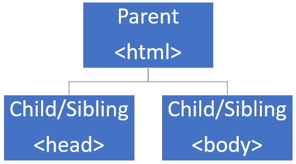
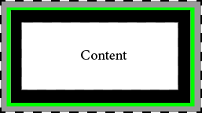

Web Standards
What is the Web?
The World Wide Web, or WWW, is a technology that uses the Internet. It contains a websites which hold information of particular topics inside documents called 'pages'. You can move between pages and sites freely and in a non-linear manner. Protocols on the Web allow different devices to communicate and to view webpages as the developer intended.
Language of the Web
HTML, or Hyper Text Markup Language, is the language of the web. It is the most common language used on the Web and is easy to learn for beginners. It was first used in the 1990s to define elements of webpages.
Current Standards
Web standards are published by the International Organisation for Standardisation (ISO). Some examples of standards are:
- File formats
- Network protocls
- Accessibility
The current standard of HTML is HTML5. It was published in 2014 as an improvement to HTML4 and to add additional features to support newer technologies.
The current standard of CSS is CSS3. It is an addition to the original specification which provides more features and improves the presentation of websites.
Types of HTML
There are two types of HTML:
- Strict: refers to intended markup defined by W3C. Code must follow a particular syntax
- Transitional: markup can contain presentation or markup that is due to be deleted
Document Object Model
HTML documents contain many elements. How these elements interact with each other is defined by the DOM. It works using a hierarchy which has Parent, Child and Sibling elements.

CSS Box-Model
This model can be used to define the design and layout of a webpage by making all elements behave as a 'box'. The 4 components of each element are: content, padding, border, margin.

The width of an element is calculated by: content + padding + border + margin
HCI
HCI stands for Human Computer Interaction which looks at how systems must be designed in order to allow for easy interaction between the human user and the technology interface. HCI includes:
- Gestalt principles: how the brain visualises information and how the human perceives it
- Semiotics: what do signs mean? For example: a shopping trolley means show the items I have slected to purchase
- Heuristics: look at how we can change traditional methods to improve user performance
- Accessibility: how technology can be used by everyone if it is built or adapted to suit different users
Mobile Design
With the emergence of many types of devices, websites must be able to cope with users viewing webapges on smaller screens. As such developers must ensure that:
- Links are clear
- Clickable areas are seperated and large enough to be clicked
- Layout principles are adhered to
- Mobile apps are supported by their relevant platform
XML and XHTML
XML stands for Extensible Mark-up Language. It was developed by the W3C and adopted in 1998. Code written in XML must floow a strict syntax but this allows for better readability by humans as well as the computer.
XHTML is an extension of HTML, with a much stricter syntax. Code must be well formatted with several structures and elements being mandatory to include in the document.
HTML5
Before HTML5 multimedia was embedded into webpages using the 'object' element. However, not all file types were supported and browsers interpreted objects differently to each other.
Now, with HTML5, there are specific tags for each media type. For example, you have: <video> and <audio> tags which allow for video and audio playback.